Simple Scripts can perform assignments, comparisons, simple math functions, and similar actions. Simple scripts are described in this section.
Complex Scripts can perform logical operations using conditional branching with IF-THEN-ELSE type control structures.
Comments: Both single-line and multi-line comments are supported.
Single-line comments start with an apostrophe ' — no ending ' required
Multi-line comments start with { and end with } and can span multiple lines
White space rules: Indent using spaces or the Tab key. Individual statements are indicated by a semicolon (;) marking the end of the statement.
Required Syntax for Expressions and Scripts
The syntax in scripts is similar to the algebraic syntax of a calculator. Most statements follow this form:
a = (b - c) / (2 + x) * xyz;
This places the value of the expression to the right of the equal sign (=) in the variable named a. Key syntax rules:
A single entity must appear to the left of the assignment operator =
The operands in an expression can be constants or variables
Statements must end with a semicolon ;
Entities can be concatenated using the plus (+) operator. For example, if a data change script such as the one below is created, each time the value of Number changes, the indirect entity Setpoint changes accordingly:
Number=1;
Setpoint = "Setpoint" + Text(Number, "#");
' Where the result is "Setpoint1."
Simple Script Example
React_temp = 150;
ResultTag = (Sample1 + Sample2)/2;
' This is a comment.
This section describes the scripting environment and basic scripting syntax. It also discusses the execution types and triggers.
Scripts — Shows all scripts currently associated with the object. Columns indicate the trigger type: Startup, On Scan, Execute, Off Scan, and Shutdown. Click Add to add a new script.
Inherited Scripts — Shows all scripts associated with the object's parent. Columns indicate trigger types for inherited scripts.
Aliases — Lets you create and modify aliases that apply to the current script. Aliases are logically descriptive names for typically long Plant reference strings, making scripts more readable.
Declarations — Provides a place for variable declaration statements, such as [DIM MyArray[1] as FLOAT];. These declared variables live from startup to shutdown and can hold values that persist between script executions. They apply only to the script in which they are declared.
Basics — Sets the expression, triggering conditions, and other settings that run the script at runtime. Includes Configure Execution Order (sets priority of multiple scripts) and Historize script state (sends script state to Historian).
From within the Script Editor the user can leverage the Attribute-Picker tool to browse through the attribute namespace of the hosting object and other objects to pick a certain attribute to be included in the script code. The tool does not distinguish between attributes of on-engine and off-engine objects.
Script Function Browser
Like the InTouch script editor, the name of the selected script function and its calling syntax will be added to the script text when the user picks it in the script function browser. In addition to being able to insert the function call, the user can also enter a type declaration statement for object names. The browser provides the ability to distinguish between properties and methods, and to browse for .NET / COM objects imported using the IDE.
Syntax Validation
Script language syntax validation is performed by selecting the red check mark above the script window. This identifies and warns of any syntax errors. It does not evaluate the logic, only the syntax. A script with syntax errors can be saved, but an object leveraging such a script cannot be deployed.
The editor exposes five script execution types. Understanding these is fundamental to writing effective scripts:
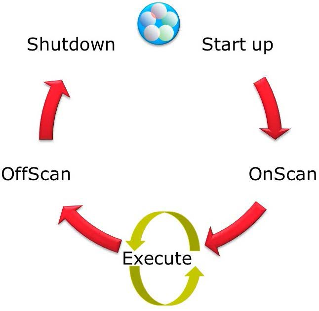
Figure 31.1 — Runtime object state lifecycle: Startup → OnScan → Execute (continuous loop) → OffScan → Shutdown. The green arrows between OnScan and Execute represent the repeating scan cycle where scripts run on each execution pass.
Startup
Startup scripts are called when an object containing the script is loaded into memory, such as during deployment, platform, or engine start. Startup instantiates COM objects and .NET objects. Depending on load and other factors, assignments to object attributes from the Startup method may fail. Attributes that reside off-object are not available to the Startup method.
OnScan
OnScan scripts are called the first time an AppEngine calls this object to execute after the object's scan state changes to OnScan. The OnScan method initiates local object attribute values or provides more flexibility in the creation of .NET or COM objects. Attributes that are off-engine are not available to the OnScan method.
Execute
Execute scripts are called each time the AppEngine performs a scan and the object is OnScan. The Execute script method is the workhorse of the scripting execution types. Use the Execute method for your runtime scripting to ensure that all attributes and values are available to the script.
If the quality check-box is checked, the Execute method supports these conditional trigger types:
Trigger Type
Behavior
Periodic
Executes whenever the elapsed time evaluates as true
Data Change
Executes when a data value or quality changes between scans
OnTrue
Executes if the expression goes from false on one scan to true on the next
OnFalse
Executes if the expression goes from true on one scan to false on the next
WhileTrue
Executes scan-to-scan as long as the expression is true at the beginning of the scan
WhileFalse
Executes scan-to-scan as long as the expression is false at the beginning of the scan
Important: For OnTrue and OnFalse trigger types, data changes between scans are not evaluated — only the value at the beginning of each scan cycle is used. If a Boolean changes from True → False → True during a single scan cycle, this is not evaluated as a data change since the value is True at the start of the scan.
A trigger period of 0 means the script executes every scan. Time-based scripts (WhileTrue, WhileFalse, Periodic) are evaluated based on elapsed time from a timestamp generated from the previous execution, not an elapsed time counter. A system clock change can alter the actual interval between executions.
Example: A periodic script is set to run every 60 minutes. It executes at 11:13 AM. A time synchronization event adjusts the clock from 11:33 AM to 11:30 AM. The script still executes when system time reaches 12:13 PM, but the actual elapsed time is 63 minutes.
OffScan
OffScan scripts are called when the object is taken OffScan. This is primarily used to clean up the object. If an object is taken OffScan (directly or indirectly because its engine is taken OffScan), all in-progress asynchronous scripts for that object are requested to shut down by setting a Boolean shutdown attribute to true. A well-written script checks this attribute before and after time-consuming operations.
Warning: If the script takes more than 30 seconds to complete, a warning appears in the logger that the script is not responding to the shutdown command. However, the script is allowed to complete and is not terminated by force. This all takes place on the engine's main thread and could potentially hang the engine.
Shutdown
Shutdown scripts are called when the object is about to be removed from memory, usually as a result of the AppEngine stopping. Shutdown scripts are primarily used to destroy COM objects and .NET objects and to free memory.
31.6 Language Definition
Reference: Module 11, Section 1 — Language Definition (page 488)
All QuickScript .NET keywords and variable name identifiers are not case sensitive, but case is preserved throughout editor sessions.
Spaces and indentation can be used freely for readability, except at least one space must appear between adjacent identifiers, and spaces/line breaks cannot appear within identifiers and numbers.
Individual statements are distinguished by a semicolon (;).
Dim A; ' This is a single line comment.
{This is an example of a
multi-line comment}
For comprehensive information on QuickScript.NET operations, operator precedence, variables, control structures, and sample scripts, reference the Application Server Scripting Guide located at: C:\Program Files (x86)\ArchestrA\Framework\Docs\1033\Scripting.pdf
QuickScript autocomplete is active by default in the Script Editor and incorporates several features:
Provides an autocomplete Attribute reference when you type a generic object name such as "Me.". Runtime attributes appear in an autocomplete list box.
Provides method parameter help in an autocomplete list box including context-specific suggestions covering definitions, keywords, script elements, and programmatic constructs such as try...catch or while...endwhile.
Automatic word completion of Attribute references, methods, programmatic constructs, and other script elements.
Press Ctrl + Space to display all available autocomplete options and variables for the selected location in the script.
References that go up the hierarchy to parent objects are called relative references. A valid reference string must always contain at least a relative reference or one substring.
Relative references, such as Me, are valid reference strings and are especially useful in templates because absolute references typically do not apply or make sense.
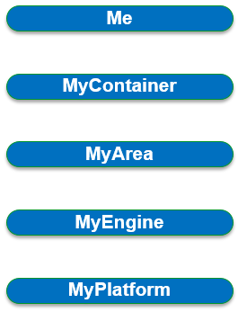
Figure 31.2 — Object hierarchy for relative references. From innermost to outermost: Me → MyContainer → MyArea → MyEngine → MyPlatform. Relative references allow scripts to traverse upward in this hierarchy.
When you use relative references like MyContainer, you can refer to contained objects within that container. For example, a reference to <MyContainer.InletValve.PV> is equivalent to <Tank1.InletValve.PV> in the following hierarchy:
Hierarchy Example — Tank1:
Tank1 — Cannot reference at this level because this is not contained
↳ Inlet Valve (InletValve) — Can reference at this level because this object is contained
↳ Outlet Valve (OutletValve) — Can reference at this level because this object is contained
31.9 Lab 20 — Adding Auto Reconnect to the DDESuiteLinkClient Object
Add reconnect functionality to a DDESuiteLinkClient object
In this lab, you will configure $gDDESuiteLinkClient to automatically reconnect to the data source when the connection is lost. You will extend the object by adding attributes and scripts, and add diagnostic information indicating the number of disconnects the object has experienced since it last went on scan.
Step 1 — Add the Auto Reconnect Functionality
First, you will create a script that automatically reconnects to the data source when the connection is lost.
In the IDE, Templates tab, Training\Global toolset, open the $gDDESuiteLinkClient configuration editor.
On the Scripts tab, click the Add Script button.
Name the new script Reconnect and press Enter.
Configure the Reconnect script as follows:
Reconnect Script Configuration:
Aliases: locked
Declarations: locked
Execution type: Execute (default) and locked
Basics: locked
Expression:Me.ConnectionStatus <> 2
Trigger type: WhileTrue (default)
Trigger Period:00:00:05.0000000
Script body:Me.Reconnect = true;
This script attempts to reconnect every 5 seconds when not connected to the data source.
This script will attempt to reconnect every 5 seconds when not connected to the data source.
Now, validate the script syntax using the Validate Script button. If nothing happens, the validation is successful.
Step 2 — Add Disconnect Counter Attribute
On the Attributes tab, create and configure a new attribute:
Name:Disconnect.Cnt
Data type: Integer
Writeability: Calculated
Step 3 — Add the Disconnect Monitor Script
Now add a script to monitor the connection status.
On the Scripts tab, add a script named Disconnect.Monitor.
Configure the Disconnect.Monitor script as follows:
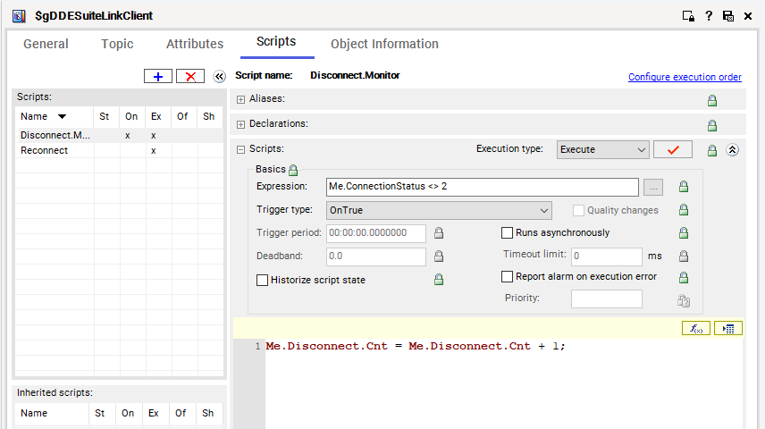
Figure 31.3 — The Scripts tab for $gDDESuiteLinkClient showing the Disconnect.Monitor script. The expression Me.ConnectionStatus <> 2 with trigger type OnTrue causes the counter to increment each time the connection drops. The Reconnect script is also visible in the left panel.
This script increases the counter by one every time the condition is true (i.e., when the connection drops).
Click the Validate Script button to verify syntax.
Step 4 — Add OnScan Execution Type
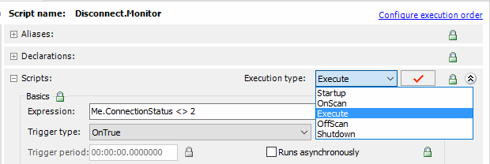
Figure 31.4 — The Disconnect.Monitor script editor with the Execution type dropdown expanded, showing all five execution types: Startup, OnScan, Execute (currently selected), OffScan, and Shutdown. The expression Me.ConnectionStatus <> 2 is visible in the Basics area.
While still in the Disconnect.Monitor script, change the Execution type to OnScan.
In the script body, enter Me.Disconnect.Cnt = 0;
This script will reset the counter to zero every time the object goes on scan. Notice that the locking of the Aliases and Declarations did not change because you are still in the same script.
Validate the script.
Notice the list of scripts on the left now lists the two scripts associated with this object and displays an "x" in the column representing each execution type that contains a script.
Save, close, and check in the object with an appropriate comment. Notice that the changes propagated to both R_ProdPLC instances.
Click Close.
Deploy both R_ProdPLC1 and R_ProdPLC2.
Step 5 — Test the Scripts in Runtime
Next, use Object Viewer to verify the execution of the scripts.
In the Deployment view, view R_ProdPLC1 in Object Viewer.
Create a new watch window named R_ProdPLC1, and add the following attributes:
ConnectionStatus
Disconnect.Cnt
Disconnect.Monitor.ExecutionCnt
Reconnect.ExecutionCnt
Save the watch list.
Connect to the machine where the ProdPlatform is deployed.
In the OCMC, right-click OI.MBTCP.1 and select Deactivate.
A confirmation message appears.
Click Yes to confirm deactivation. Notice the OCMC now displays a red icon, indicating the server has stopped.
Connect to the machine where the GRPlatform is deployed. In Object Viewer, the watch window now indicates:
R_ProdPLC1.ConnectionStatus — the object is currently disconnected
R_ProdPLC1.Disconnect.Cnt — the object has disconnected once
R_ProdPLC1.Reconnect.ExecutionCnt — how many times the object has tried to reconnect
31.10 Lab 20 — Deployment View Context
The following screenshots show the deployment structure used throughout this lab, providing context for the runtime environment where the scripts execute.
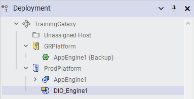
Figure 31.5 — Deployment view showing TrainingGalaxy with GRPlatform (AppEngine1 as Backup) and ProdPlatform (AppEngine1 and DIO_Engine1). This is the initial deployment structure before lab modifications.
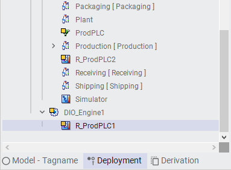
Figure 31.6 — Expanded Deployment tree showing R_ProdPLC1 under DIO_Engine1, with R_ProdPLC2 visible at a different level. The R_ProdPLC objects are the redundant PLC instances that the reconnect scripts will monitor.
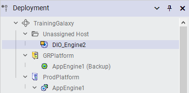
Figure 31.7 — Deployment view showing DIO_Engine2 under Unassigned Host, with GRPlatform (AppEngine1 Backup) and ProdPlatform (AppEngine1). This represents the deployment state after engine assignments.
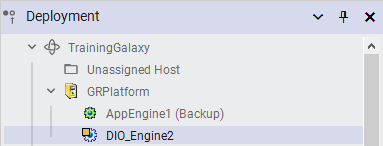
Figure 31.8 — Deployment view focused on GRPlatform showing AppEngine1 (Backup) and DIO_Engine2. The backup AppEngine is the runtime host for the R_ProdPLC scripts.
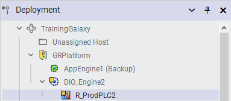
Figure 31.9 — Deployment view showing R_ProdPLC2 assigned under DIO_Engine2 on GRPlatform. Both R_ProdPLC instances are deployed and running with the reconnect scripts.
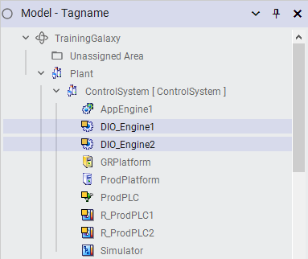
Figure 31.10 — Model-Tagname view showing the complete object hierarchy under TrainingGalaxy. Includes AppEngine1, DIO_Engine1, DIO_Engine2, GRPlatform, ProdPlatform, ProdPLC, R_ProdPLC1, R_ProdPLC2, and Simulator objects under the ControlSystem grouping.
IO Device Configuration Context
The following screenshots show the IO device mapping for the PLCs used in the labs. These provide context for what data the DDESuiteLinkClient is communicating with.
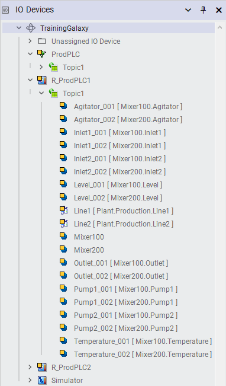
Figure 31.11 — IO Devices view showing R_ProdPLC1's Topic1 with mapped IO points for Mixer100 and Mixer200, including Agitator, Inlet, Level, Outlet, Pump, and Temperature tags. This is the data source that the reconnect script monitors.
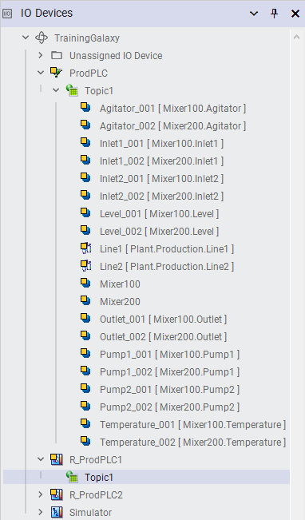
Figure 31.12 — IO Devices view showing ProdPLC's Topic1 with the complete IO tag mapping for both mixers. Tags include Agitator_001/002, Inlet1/Inlet2, Level, Outlet, Pump1/Pump2, and Temperature for Mixer100 and Mixer200.
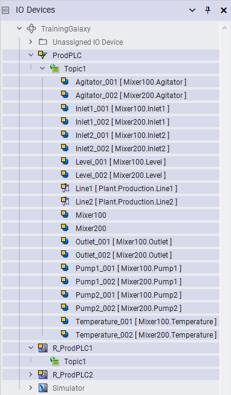
Figure 31.13 — IO Devices view showing ProdPLC with production line markers (Line1, Line2) mapped to Plant.Production.Line1 and Plant.Production.Line2. These plant-level IO points provide context for the production environment.
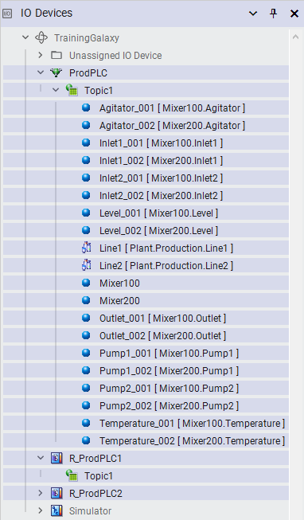
Figure 31.14 — IO Devices view showing R_ProdPLC1 with the !Line1/!Line2 production markers and complete IO mapping. The redundant PLC has the same IO configuration as ProdPLC, enabling failover.
Lab 20 — Runtime Verification Screenshots
The following screenshots show the runtime monitoring used to verify the reconnect scripts during Lab 20.
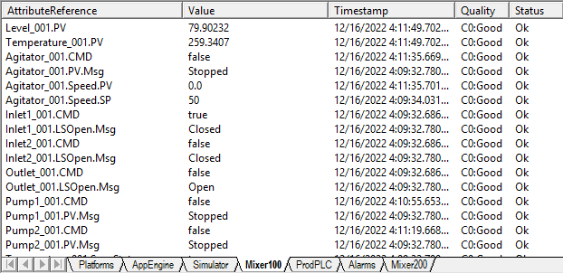
Figure 31.15 — Object Viewer showing real-time monitoring of process tags including Level_001.PV (79.9022), Temperature_001.PV (259.3407), Agitator_001.CMD, and Pump1_001.CMD. All values show Quality "Good" and Status "Ok" before deactivation.
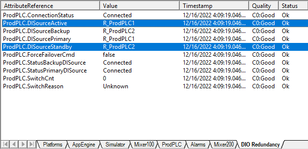
Figure 31.16 — DIO Redundancy tab showing ProdPLC attributes: ConnectionStatus=Connected, DISourceActive=R_ProdPLC1, DISourcePrimary=R_ProdPLC2, DISourceStandby=R_ProdPLC2, ForceFailoverCmd=false, SwitchCnt=0. Both primary and backup sources are connected.
Figure 31.17 — Modify Boolean Value dialog for ProdPLC.FailoverCmd. Setting this to True triggers a forced failover between the primary and standby DI sources, used to test the reconnect functionality.
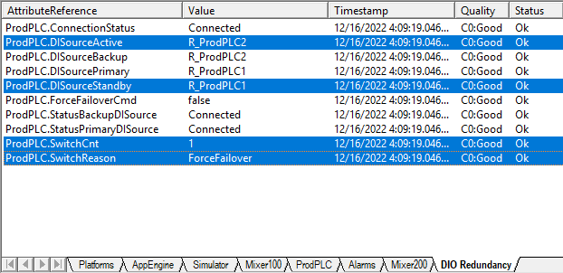
Figure 31.18 — DIO Redundancy tab after forced failover. DISourceActive is now R_ProdPLC2, SwitchCnt=1, SwitchReason=ForceFailover. The system has successfully switched from the primary to the backup source.
Figure 31.19 — DIO Redundancy tab after additional failover testing. Three rows are highlighted (DISourceActive, DISourcePrimary, DISourceStandby), SwitchCnt=2, SwitchReason=ForceFailover. The system tracks all switchover events.
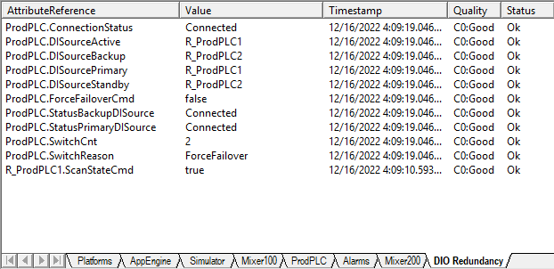
Figure 31.20 — DIO Redundancy tab showing R_ProdPLC1.ScanStateCmd=true and the redundancy state with SwitchCnt=2. The ScanStateCmd attribute controls whether the PLC is actively scanning data.
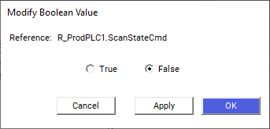
Figure 31.21 — Modify Boolean Value dialog for R_ProdPLC1.ScanStateCmd being set to False. This takes the redundant PLC off-scan, which should trigger the Disconnect.Monitor script's OnScan execution type to reset the disconnect counter.
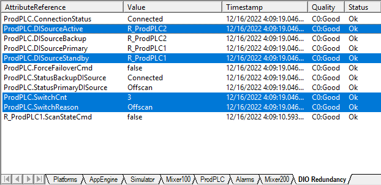
Figure 31.22 — DIO Redundancy tab after setting ScanStateCmd=false. StatusPrimaryDISource=Offscan, SwitchCnt=3, SwitchReason=Offscan. The system detected the source went off-scan and switched to the backup.
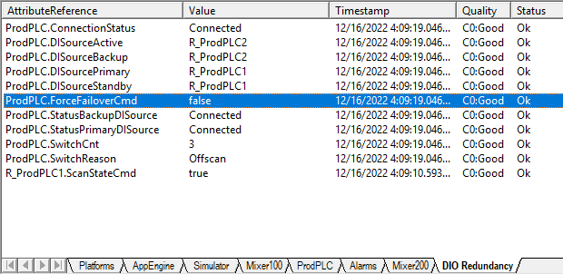
Figure 31.23 — Object Viewer showing ProdPLC attributes after the ScanStateCmd has been reset. ForceFailoverCmd is highlighted (false). SwitchCnt=3, SwitchReason=Offscan. Both StatusPrimaryDISource and StatusBackupDISource show Connected.
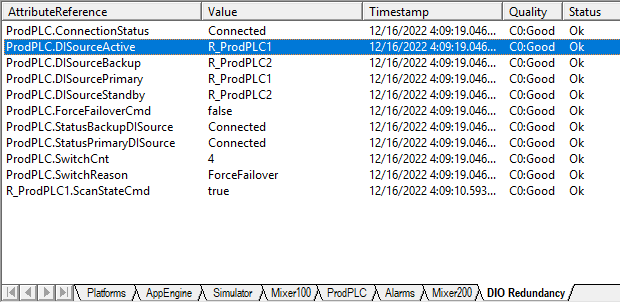
Figure 31.24 — DIO Redundancy tab after re-enabling ScanStateCmd=true. DISourceActive has returned to R_ProdPLC1, confirming the primary source is back online. The redundancy status shows DISourceActive has returned to R_ProdPLC1 with SwitchCnt=4.
Step 6 — Final Verification
Switch back to the ProdPlatform machine, and in the OCMC, activate OI.MBTCP.1.
Switch back to the GRPlatform machine. In Object Viewer, after a few seconds, the watch window displays that data is once again connected.
Add the following attributes to the watch window: ScanState and ScanStateCmd.
Set the ScanStateCmd attribute to False. Click OK. The ScanState now displays false.
Set the ScanStateCmd attribute back to True. The ScanState now displays true and the Disconnect.Cnt attribute has been reset to 0.
Save the watch list and minimize Object Viewer.
31.11 Lab 21 — Switching Back to the Primary Redundant Engine
In this lab, you will create a script to run on the Active engine that will be triggered when the primary machine is running as the "Backup" machine. The Active engine will automatically switch from the backup server to the primary server when the primary server is available. This is useful for load balancing and forcing use on specific equipment.
Lab 21 builds on the scripting concepts learned in Lab 20. The key concept is creating a script that:
Runs on the Active engine
Detects when the primary machine is running as "Backup"
Automatically switches back to the primary server when it becomes available
Is useful for load balancing and forcing use on specific equipment
Key Takeaway from Lab 21: Scripts can be used not just for data monitoring (as in Lab 20) but also for controlling engine failover behavior, enabling automatic recovery to the preferred server once it returns to service.
Figure 31.25 — Training environment: participants completing the scripting labs on their workstations.
Relative references (e.g., Me) allow scripts to traverse the object hierarchy
Lab 20: Built auto-reconnect logic using WhileTrue trigger (Reconnect script) and OnTrue trigger (Disconnect.Monitor script), with OnScan to reset counters
Lab 21: Created scripts for automatic failback to the primary redundant engine
📝 Knowledge Check
What are the two types of scripts supported by Application Server? Simple scripts (assignments, comparisons, math) and complex scripts (IF-THEN-ELSE logic).
What trigger type should you use for a script that should run continuously while a condition is true? WhileTrue — executes scan-to-scan as long as the expression validates as true at the beginning of the scan.
Why does the Disconnect.Monitor script use OnTrue rather than WhileTrue? OnTrue fires exactly once when the expression transitions from false to true, ensuring the counter increments by exactly 1 per disconnection event. WhileTrue would increment the counter on every scan while disconnected.
What is the purpose of the OnScan execution type in the Disconnect.Monitor script? It resets the Disconnect.Cnt to 0 every time the object goes on scan, providing a clean count starting from the most recent on-scan event.
How do you indicate the end of a statement in QuickScript.NET? With a semicolon (;) at the end of the statement.
Source: AVEVA Application Server 2023 Training Manual, Module 11 Section 1 + Labs 20-21